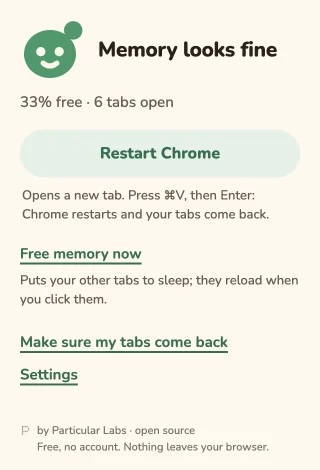
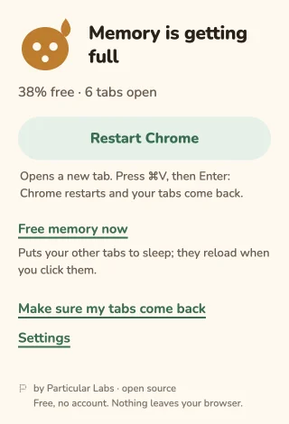
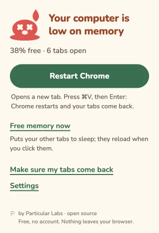

RAM Nudge
A small pebble that watches your free memory and nudges you before Chrome slows down.
Download the latest zipFree. No account. Install it yourself in a few steps. Here’s how

A little face. Five moods.
The pebble on your toolbar changes as your computer’s free memory gets lower. A quiet glance, then a nudge when it’s low.
- Calm
 Strained
Strained Sweating
Sweating Red
Red Melting
Melting
Restart, with one paste
Restart Chrome copies chrome://restart and opens a new tab. Press Cmd+V on Mac or Ctrl+V on Windows/Linux, then Enter.
Choose Continue where you left off in Chrome’s startup settings so Chrome restores your tabs. If another extension replaces your new tab, press Cmd+L (Mac) or Ctrl+L (Windows/Linux) before pasting.
Free memory now
Put other tabs to sleep without restarting. Active tabs in each window, pinned tabs, tabs playing sound and tabs excluded from Chrome’s Memory Saver stay awake.
Sleeping tabs reload when you click them. Save your work first: unsaved changes in a page can be lost.



Make room for a pebble.
Install for free, without an account. Works on Chrome 120 or newer (and Chromium browsers at that level).
This is a manual install while the Chrome Web Store version is on the way.
- Download the latest zip from GitHub Releases (the file ending in
-chrome.zip). - Unzip it. You’ll get one RAM Nudge folder.
- Move that folder somewhere permanent. Chrome loads the extension from there: do not delete it.
- Copy
chrome://extensionsinto Chrome’s address bar and press Enter. - Turn on Developer mode at the top of the page.
- Click Load unpacked and choose the folder you kept.
Optional: check the download
Download SHA256SUMS.json from the same release. In your downloads folder, run one command below and compare its SHA-256 with the zip’s entry in that file.
macOS
shasum -a 256 ram-nudge-*-chrome.zipLinux
sha256sum ram-nudge-*-chrome.zipWindows PowerShell
Get-FileHash .\ram-nudge-*-chrome.zip -Algorithm SHA256A new version? Same little home.
Download the new zip, unzip it, and replace the contents of your permanent extension folder with the new contents. In chrome://extensions, click Reload on the RAM Nudge card.
There are no automatic updates until the Chrome Web Store version. Chrome may show a developer-mode extensions notice at startup.
Your memory. Your browser.
Nothing leaves your browser. No account, no tracking, no network calls.
Four permissions, in plain words
system.memory- Read total and free system memory.
alarms- Check memory every 30 seconds.
storage- Keep your settings and nudge state in your browser.
notifications- Show a low-memory nudge.
No tab or website access permissions. RAM Nudge can count and put tabs to sleep, but cannot read their titles, addresses or page content.
Open source under the MIT license. Read the source on GitHub.